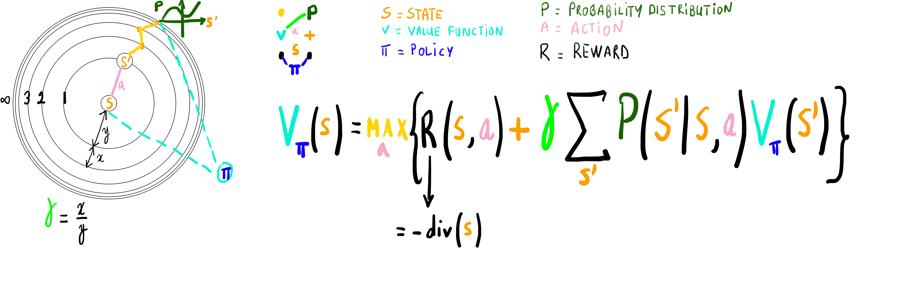

By analysing more and more situations, we hope to consolidate and refine our framework architecture.
If you are passionate about learning interdisciplinary approaches to solving problems, you are in the right place.
Mapping the first maxwell equation over the tree of life.
- Mapping the Bellmann equation over the tree of life. 
- Binah is the engine that automatically found the best route maximizing the reward for the chosen policy.
- "Passive versus Active" models the interaction between Yesod and Chokhmah.
- To have a good grasp of this interaction, we will use the analogy of autoencoders, or more specifically Variational Autoencoders(VAE).
- "An autoencoder consists of two parts: An encoder that takes the data and compresses it into a much smaller representation, and a decoder that decompresses this representation to attempt to recreate the input. The difference between an autoencoder and VAE is that the compressed form of the data the encoder outputs is represented as a probability distribution of some parameters. This change allows the decoder to “sample” from the code, making the VAE a generative model. Here’s an example to understand this better: Let’s say we are training a VAE on images of faces. Where a regular autoencoder might associate a single parameter in the latent space with whether or not the eyes are closed, a VAE can actually learn how closed the eyes are (here, the openness of the eyes becomes a continuous variable, instead of a single number)." Source
- In training mode, when a representation of the dataset is built and saved in code, we can consider VAE's yesod as the active agent who picked each data point within our dataset. This was you in Yesod mode.
- Once we have our representation, we can consider VAE's Chokhmah as the active agent who changes the hidden and extremely low-level parameters of the learned representation. This is you in Chokhmah mode browsing latent space (binah) to generate new data points via decoding. Yesod here is passive and is considered a receiving sensory system.
- We could also imagine an online training with an always active Chokhmah and a partially-active but game-changing Yesod as in real life.
- We are describing the shape of a human body using Fourier series.
- We can notice the body contour getting more complex as we increase the number of circles (periodic functions) to infinity.
- This card unifies harmonic analysis with the optimization part (binah) of dynamic programming.

- Eötvös rule: An increase in temperature of a fluid decreases its surface tension.
- Because of its molecular contituants pulling inwards, we can tell that a material exhibits a negative divergent behavior as its surface tension gets important - explaining our innate attraction and sense of satisfaction towards manipulating water balloons.
- Mapping the Hagen-Poiseuille Equation over Binah component.
- Binah here describes how the fluid will travel the pipe by taking into account as much its intrinsic parameters like viscosity as the extrinsic ones like pressure.
- This equation assumes the fluid is newtonian (Non-Newtonian fluids follow different sets of rules: Shear-thinning fluids decrease in viscosity as the pressure or force increases. Thixotropic fluids change viscosity over time.) and ignores fluid temperature.
- While still being approximative, this card could easily bridge dynamic programming with the quantum world by incorporating the temperature parameter (cf. Boltzmann constant).
Mapping the CCC model proposed by Roger Penrose on the tree fo life.
Why does the typing sound of your colleague's keyboard makes you nervous sometimes ?

Imagine having your heart layed down on a table and getting squeezed and torn apart by someone else's hands. Can you feel the pain ?
What would be the shortest program removing that feeling ?
The problem to solve:
To solve the problem, we must first identify precisely (really important to not be afraid of diving into it) what's causing the mental harm and encode it into a short program.
If it was just meat, without arteries, there would be no pain. What makes it painful is the presence of arteries which refers to your entire cardio-vascular system.
The short program causing the mental harm that we need to tumble (convert it positive divergence into a negative one) in Hod is the following:
P = "The hands extremities or nails penetrating chaotically the frontier between the heart muscle and the artery"
1 - Let's find out what centrality is equal to: C = { Dinner (or eating activity), Violence, Hate, Anger, Meat, Hot, Wet, Bloody, Red, slippery, gleaming, Table, Fingers, Nails }
2 - We keep in mind that we need to allocate mass or energy to what's fragile.
3 - We try to define in Netzach a physical environment that maximizes the centrality C. The gym is perfect for that.
4 - We try to find the best program in Hod that is compatible with our newly defined environment and that tumbles our original program by incorporating the mass/energy within the area defined in 2.
The video displays our tumbling program: Fat is melting which makes it compatible with the gym while allowing the chaos in P to disappear by making the artery popping out of the muscle in a very satisfying way.
PS: The steps 2, 3 and 4 are done iteratively while always checking centrality C maximization.